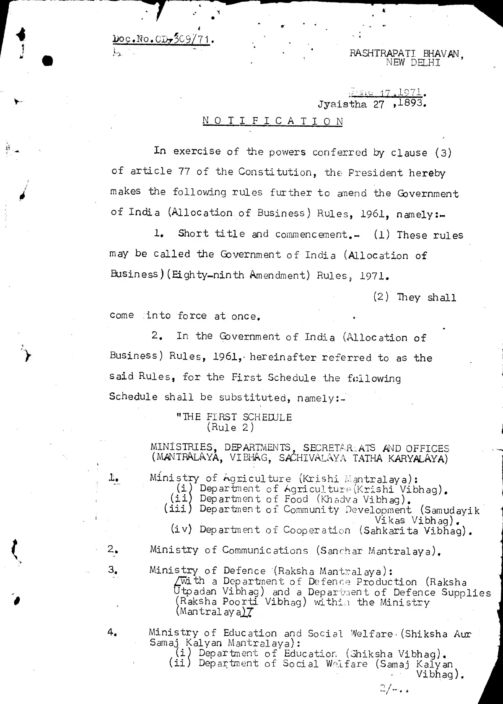
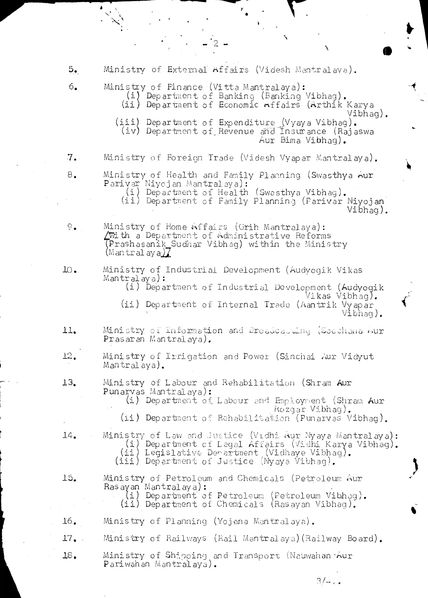
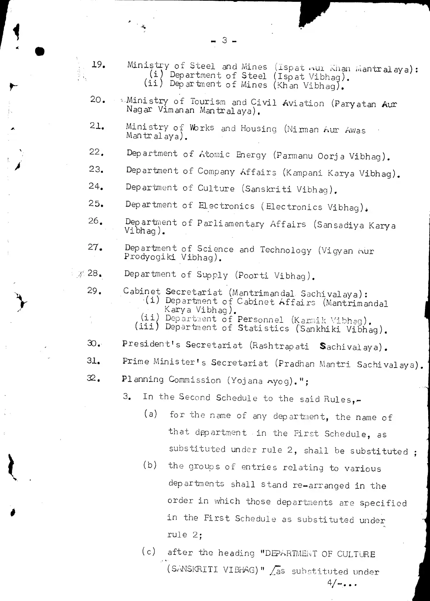
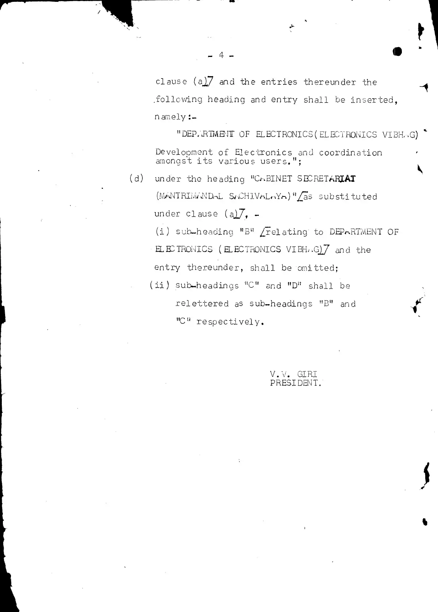

Amendment #89 (S.O. 2319, 1971)
3 changes: 1 to the First Schedule, 2 to the Second Schedule. 2 applied1 not applied
What it did to the ministries
- bornDepartment of Electronics is created (0 subjects) change 2 · histories: Information Technology
The order, page by page
Page 1 of 4

1Schedule 1
- THE FIRST SCHEDULE (Rule 2) MINISTRIES, DEPARTMENTS SECRETAR ATS AND OFFICES (MANTRALAYA, VIBHAG, SACHIVALAYA TATHA KARYALAYA)
- 1. Ministry of Agriculture
- i. Department of Agriculture
- ii. Department of Food
- iii. Department of Community Development
- iv. Department of Cooperation
and 54 more
- 2. Ministry of Communications
- 3. Ministry of Defence
- -. Department of Defence Production
- -. Department of Defence Supplies
- 4. Ministry of Education and Social Welfare
- i. Department of Education.
- ii. Department of Social Welfare 2/-.. i
- 5. Ministry of External Affairs
- 6. Ministry of Finance
- i. Department of Banking
- ii. Department of Economic Affairs
- iii. Department of Expenditure
- iv. Department of Revenue and Insurance
- 7. Ministry of Foreign Trade
- 8. Ministry of Health and Family Planning
- i. Department of Health
- ii. Department of Family Planning
- Ministry of Home Affairs
- -. Department of Administrative Reforms (Prashasanik_Sudhar Vibhag)
- 10. Ministry of Industrial Development
- i. Department of Industrial Development i) Department of Internal Trade
- 11. Ministry of Information and Broadcasting
- 12. Ministry of Irrigation and Power
- 13. Ministry of Labour and Rehabilitation
- i. Department of Labour and Employment
- ii. Department of Rehabilitation
- 14. Ministry of Law and Justice
- i. Department of Legal Affairs
- ii. Legislative Department (Vidhaye Vibhag).
- iii. Department of Justice
- 15. Ministry of Petroleum and Chemicals
- i. Department of Petroleum
- ii. Department of Chemicals
- 16. Ministry of Planning
- 17. Ministry of Railways (Rail Mantralaya) (Railway Board)
- 18. Ministry of Shipping and Transport 3/m.
- 19. Ministry of Steel and Mines
- i. Department of Steel
- ii. Department of Mines
- 20. * Ministry of Tourism and Civil Aviation
- 21. Ministry of Works and Housing
- 22. Department of Atomic Energy
- 23. Department of Company Affairs
- 24. Department of Culture
- 25. Department of Electronics
- 26. Department of Parliamentary Affairs
- 27. Department of Science and Technology ☐ 28. Department of Supply
- 29. Cabinet Secretariat
- i. Department of Cabinet Affairs
- ii. Department of Personnel
- iii. Department of Statistics
- 30. President's Secretariat
- 31. Prime Minister's Secretariat
- 32. Planning Commission (Yojana nyog)
applied at schedule 1 in the Rules after #89
read page break
Page 2 of 4

Page 3 of 4

2after Schedule 2 › DEPARTMENT OF CULTURE
- DEPARTMENT OF ELECTRONICS
- Development of Electronics and coordination amongst its various users.
applied at schedule 2 › department DEPARTMENT OF ELECTRONICS in the Rules after #89
Page 4 of 4

3Schedule 2 › CABINET SECRETARIAT › DEPARTMENT OF ELECTRONICS
not applied (the change could not be placed in the Rules as read; see How this document was read)
states inferred loose
How this document was read
Changes placed by an inference rule
| Change | Rule | Status | What |
|---|---|---|---|
| 3 | loose | accepted | change 3: department DEPARTMENT OF ELECTRONICS taken for department Department of Electronics Development of Electronics and coordination amongst its various users., named loosely |
| hindi_name | accepted | the Second Schedule's SAMAJ KALYAN VIBHAG read as DEPARTMENT OF SOCIAL WELFARE, the First Schedule's English name for it | |
| hindi_name | accepted | the Second Schedule's KARMIK VIBHAG read as DEPARTMENT OF PERSONNEL, the First Schedule's English name for it |
From the Government of India (Allocation of Business) Rules, 1961 and their amendments, as published by the Cabinet Secretariat (cabsec.gov.in), read by orgpedia. The readings of the older scanned gazettes have known gaps.